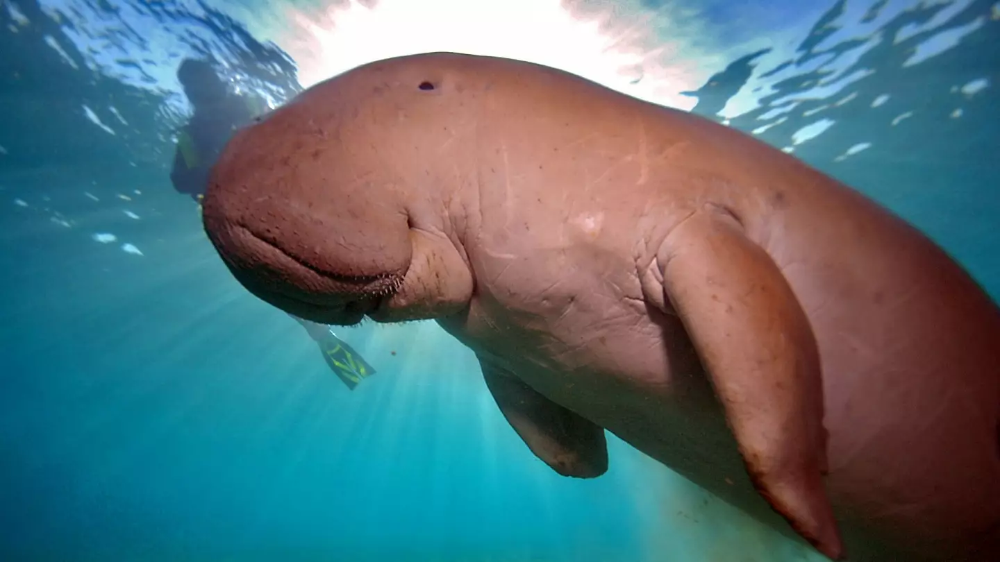

- Rare animals
Most of the animals in the mangroe forests are rare and here are some of them.
1.Proboscis Monkeys
These are the monkeys with long noses. They are not hostile to humans. There are only about 7,000 of them left in the wild.
2.Dugongs(a.k.a Sea Cows)
Dugongs are animals that are also very friendly to people annd are excited to see people in their area. There are about 70,000 of them left in the world.
3.Horseshoe Crab
Horseshoe crabs are very harmless animals which have not evolve since the beginning of time. There are 150,000 in the world left.
- Hostile Animals
There are many of the fun things to do in the mangrove forests but they might come with a cost because there are many crocodiles and alligators that have been habitated in Florida adn have lived along side humans for millins of years.But the people there can tame the animals or take care of visitors very well.
If you are there and don't have too much idea of what to do, there is a information center you can ask at.